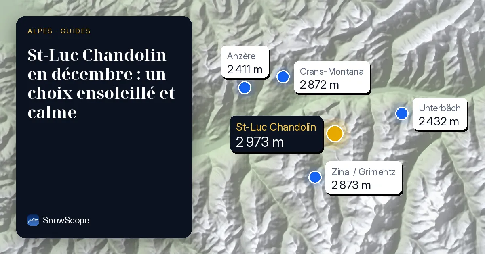

St-Luc Chandolin en décembre : un choix ensoleillé et calme
St-Luc Chandolin est une destination paisible pour une escapade hivernale dans le Val d'Anniviers. Elle offre une atmosphère détendue et une neige très fiable en haute altitude pour un séjour en décembre.
Consultez les prévisions neige en temps réel pour St-Luc Chandolin sur l'application SnowScopeHauteurs de neige, alertes poudreuse et carte 3D, gratuitement.
Un balcon ensoleillé dans les montagnes
St-Luc Chandolin est un endroit où l'on peut vraiment ralentir et profiter de la montagne. Le domaine skiable balisé compte 56 km de pistes et 18 remontées mécaniques. Cela offre beaucoup de variété pour une semaine calme d'exploration. C'est un endroit ensoleillé dans la région du Valais. Les gens l'appellent souvent un balcon car il est situé haut au-dessus du fond de la vallée.
La remontée la plus basse part de 1 682 m et la plus haute monte à 2 973 m, soit 1 291 m de dénivelé. Le domaine est plus petit que les grands noms du Valais, et c'est justement pour cela qu'il convient à un couple qui cherche une semaine calme.

À quoi s'attendre de la neige en décembre
Nous avons examiné de près notre historique de neige de 46 hivers passés pour voir à quoi ressemble habituellement le mois de décembre. Au sommet des remontées, à 2 973 m d'altitude, la profondeur habituelle en décembre est de 110 cm. C'est très fiable pour le ski en début de saison. En fait, entre le 15-21 décembre et le 22-28 décembre, le sommet a eu 30 cm ou plus dans 100 % des hivers passés.
La mi-montagne à 2 327 m est également très stable. La profondeur habituelle en décembre y est de 57 cm. Cependant, le bas des remontées à 1 682 m peut être un peu moins enneigé au début du mois. La profondeur habituelle à la base est de 38 cm pour tout le mois de décembre. Lors d'un hiver peu enneigé, ce qui arrive environ 1 hiver sur 10, la profondeur à la base peut être inférieure à 18 cm. Si vous voulez plus de neige à la base, la part des hivers avec 30 cm ou plus passe de 41 % la première semaine de décembre à 85 % la dernière semaine. Pour ceux qui cherchent une neige plus profonde, la mi-montagne a 50 cm ou plus dans 78 % des hivers pendant la dernière semaine du mois.
Vérifier les coûts des vacances
Planifier un voyage en Suisse peut être coûteux, mais cette zone semble être une meilleure affaire que les grands noms. Nous avons vérifié le site officiel pour les prix de l'hiver 2026-27 pour être sûrs. Un forfait adulte 1 jour Val d'Anniviers coûte CHF 75,00. Ce forfait est assez flexible car il couvre St-Luc Chandolin, Grimentz-Zinal et Vercorin.
Pour une semaine complète, le forfait adulte 6 jours Val d'Anniviers coûte CHF 339,00. Un seul forfait pour toute la vallée permet de changer de secteur quand vous avez envie d'un autre paysage.
Comparaison avec Grimentz-Zinal
Il est utile de comparer cette station avec sa voisine, Grimentz-Zinal. Cette station est légèrement plus grande. Le domaine skiable balisé y compte 71 km de pistes et 23 remontées mécaniques. Grimentz-Zinal a une base plus basse à 1 552 m, où la profondeur habituelle en décembre est de 27 cm. C'est inférieur aux 38 cm de profondeur habituelle à la base de St-Luc Chandolin à 1 682 m.
Au sommet des remontées, Grimentz-Zinal atteint 2 873 m avec une profondeur habituelle de 99 cm. St-Luc Chandolin est plus haut à 2 973 m et a généralement plus de neige au sommet avec 110 cm. Grimentz-Zinal offre un dénivelé légèrement plus grand de 1 321 m contre 1 291 m ici. Les deux stations partagent les mêmes prix de forfaits. Votre choix dépend de si vous voulez les pistes supplémentaires de Grimentz-Zinal ou les pentes plus hautes et plus ensoleillées de St-Luc Chandolin.
Une tendance stable pour l'avenir
Une chose que nous avons trouvée intéressante dans notre historique de neige est la stabilité de la neige. À la hauteur de mi-montagne de 2 327 m, la profondeur moyenne en décembre était de 54 cm pendant les 15 premiers hivers de 1980-81 à 1994-95. Au cours des 15 derniers hivers de 2011-12 à 2025-26, la moyenne était exactement la même à 54 cm. Cette tendance plate est très rassurante pour planifier un voyage. Même à la base de 1 682 m, la moyenne était de 38 cm tant dans les 15 premiers hivers que dans les 15 derniers. Au sommet, la moyenne est passée de 111 cm dans la première période à 99 cm dans la dernière.
En ce moment, la saison commence à peine. Le 13 novembre 2026, la profondeur de neige est de 0 cm à la base et 5 cm à mi-montagne. Au sommet, elle est de 1 cm. Les prévisions à deux semaines pour la mi-montagne et au-dessus montrent une fourchette de 60 cm à 104 cm de neige fraîche. C'est un début prometteur pour le mois à venir.
Conseils aux skieurs
- Visez la semaine du 22-28 décembre si vous voulez les meilleures chances de neige à la base, car il y a 30 cm ou plus dans 85 % des hivers passés.
- Passez la plupart de votre temps au-dessus de la mi-montagne à 2 327 m où la profondeur habituelle en décembre est de 57 cm.
- Vérifiez toujours la bulletin d'avalanches avant de penser à quitter les pistes balisées.
- Achetez votre forfait adulte 6 jours Val d'Anniviers pour CHF 339,00 sur le site officiel pour couvrir toute la vallée.
- Cherchez la neige la plus profonde au sommet des remontées à 2 973 m, où la profondeur habituelle le 15 décembre est de 109 cm.
Autres cartes (sites externes)
Références et crédits
- Val d'Anniviers tourism, official ski pass prices 2026-27 www.valdanniviers.ch/fr/Z33617/tarifs-ski-grimentz-zinal
- SnowScope, December snow at three heights and today's snow map snowscope.app/
À propos de ces chiffres
Chiffres de neige : historique SnowScope, 46 hivers passés (1980-81 à 2025-26) à trois altitudes de chaque station (un modèle du passé corrigé de l'altitude : une estimation pour une zone, pas des mesures de la station) ; chiffres de décembre calculés à partir des hauteurs quotidiennes de ces hivers. Neige actuelle et tendance à deux semaines : prévisions SnowScope (tendance ECMWF et GFS, une fourchette, pas une promesse). Remontées et pistes : cartographie OpenSkiMap. Prix : pages officielles des stations ci-dessous, lues le 2026-11-13 ; les prix peuvent changer, vérifiez avant de réserver.
Bulletins d'avalanche officiels: SLF – WSL Institute for Snow and Avalanche Research
Citer ce bulletin
Pour la recherche, l'enseignement ou la presse : chiffres et graphiques réutilisables librement sous CC BY 4.0 avec cette citation.
SnowScope (2026), St-Luc Chandolin en décembre : un choix ensoleillé et calme, https://snowscope.app/blog/fr/2026/11/st-luc-chandolin-december-ski-quiet-value-valais-2026.html, consulté le 2026-11-14
SnowScope (Atlas Labs). (2026, November 14). St-Luc Chandolin en décembre : un choix ensoleillé et calme. SnowScope snow reports. https://snowscope.app/blog/fr/2026/11/st-luc-chandolin-december-ski-quiet-value-valais-2026.html
BibTeX
@misc{snowscope2026stlucchandolindecembersk,
author = {{SnowScope (Atlas Labs)}},
title = {St-Luc Chandolin en décembre : un choix ensoleillé et calme},
year = {2026},
month = nov,
howpublished = {\url{https://snowscope.app/blog/fr/2026/11/st-luc-chandolin-december-ski-quiet-value-valais-2026.html}},
note = {Published 2026-11-14 13:29 UTC; accessed 2026-11-14}
}· CC BY 4.0 · Méthodes, données et outils →
St-Luc Chandolin : neige et température selon l'altitude, cet hiver vs l'hiver dernier (outils) →
Suivre St-Luc Chandolin
Gratuit : un message quand la neige arrive, et la météo chaque matin.
Autres bulletins neige

Les neiges de début de saison dans les Alpes dépassent de 38 % la moyenne des 46 dernières années. Les pentes intermédiaires de La Plagne accumulent 36 cm de plus que d'habitude à cette date, avec de fortes chutes prévues jusqu'à dimanche.

Prévision de 79 cm de neige nouvelle aux Grands Montets du 16–18 novembre, principalement au-dessus de 2 000 m d'altitude, selon le modèle de prévision du 15 novembre.

Bonneval-sur-Arc affiche 52 cm en altitude le 8 novembre. Les semaines 10-11 correspondent à la pointe de la saison neigeuse. Découvrez ce qu'il faut emporter selon les prévisions.